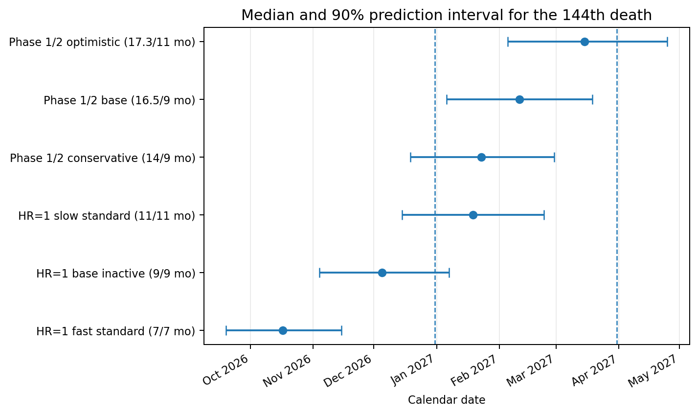
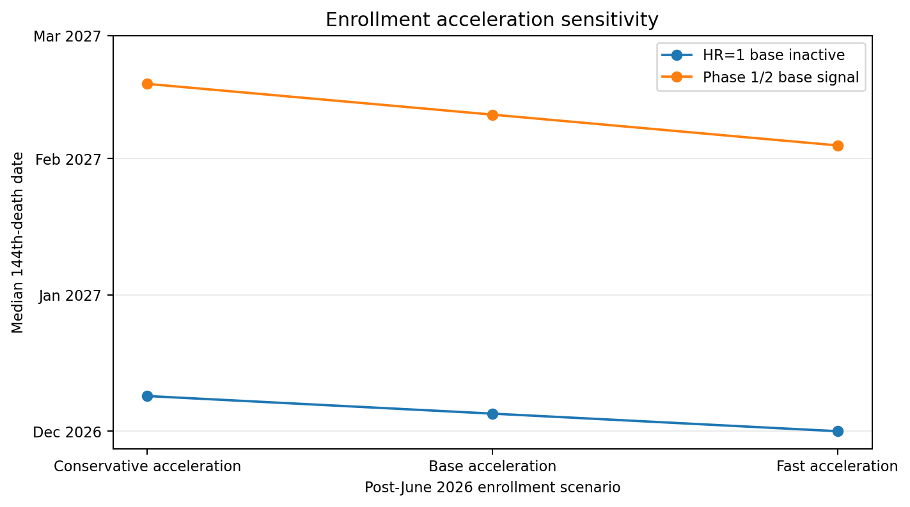
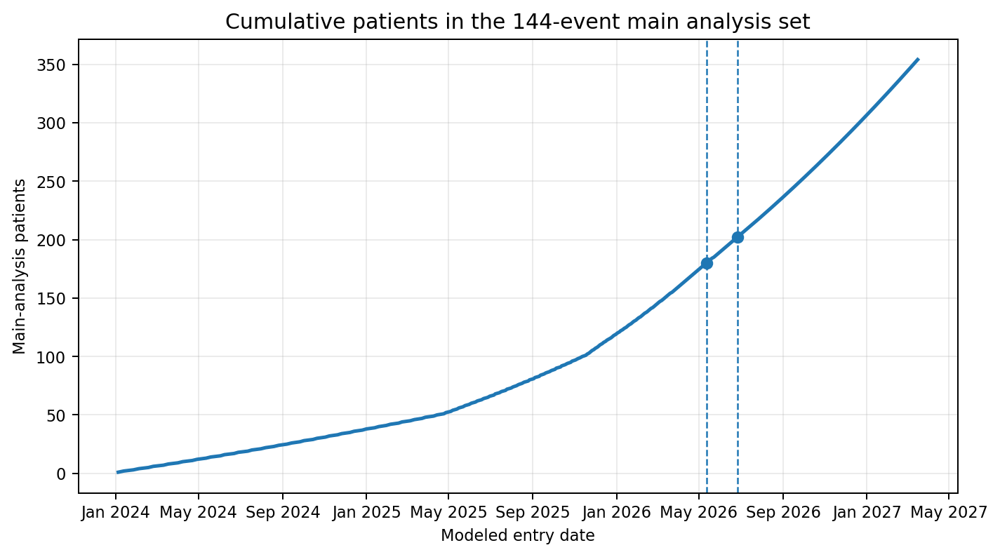
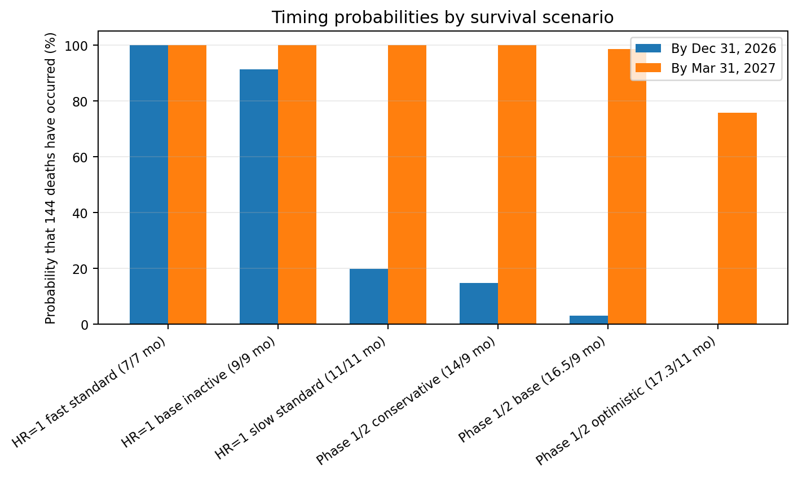
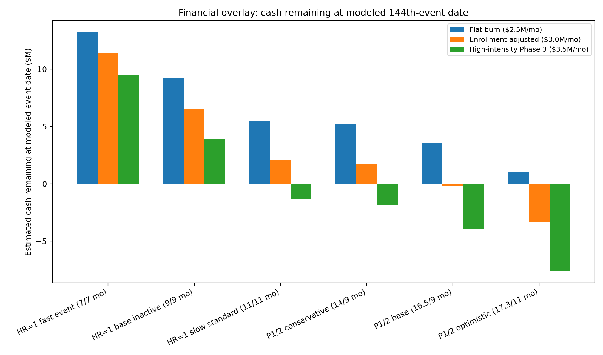

Core finding
The analysis does not predict trial success. It estimates when the 144th death would be expected under different survival assumptions.


What was modeled?
The model reconstructs the likely patient-entry schedule from public enrollment disclosures and simulates death dates under multiple survival assumptions.
1. Trial design
The base event set focuses on the likely primary Phase 3 comparison: Bria-IMT+CPI vs physician's choice. The early monotherapy cohort is excluded in the base case.
2. Enrollment timing
Reported milestones are converted into a synthetic patient-entry calendar, including accelerating enrollment scenarios after the latest disclosure.
3. Survival simulation
Each patient receives a simulated survival time from an exponential distribution calibrated to scenario-specific median OS assumptions.


Clinical timing vs cash runway
The report adds a financial overlay: the same delay that may be clinically encouraging can also increase financing pressure.
| Clinical scenario | Median 144th event | Interpretation | Financing angle |
|---|---|---|---|
| HR=1 / OS 9 vs 9 months | December 2026 | Standard-therapy-like event window | Cash cushion remains, but dilution optionality stays relevant |
| Phase 1/2 base / Bria 16.5 vs TPC 9 months | February 2027 | Later window becomes more consistent with longer treatment-arm survival | Runway tightens as the information window moves later |
| Optimistic survival scenario | March 2027 | Potentially more encouraging timing if enrollment assumptions hold | Pre-readout or near-readout financing risk becomes more material |

Key interpretation: delayed event accrual is not automatically positive. It may reflect slower enrollment, operational timing, data cleaning, patient mix, or longer treatment-arm survival. The model is a framework for interpreting timing, not a prediction of clinical success.
Read the full report
The full report includes assumptions, sources, Monte Carlo outputs, charts, limitations and the financial overlay.